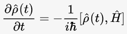
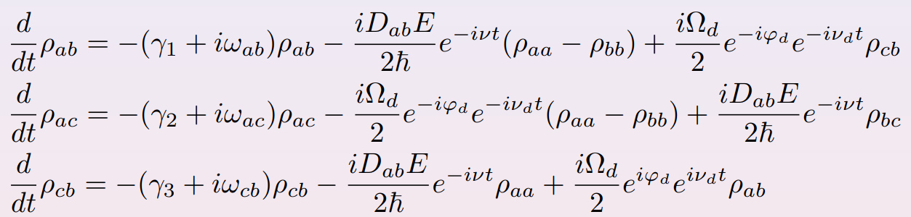
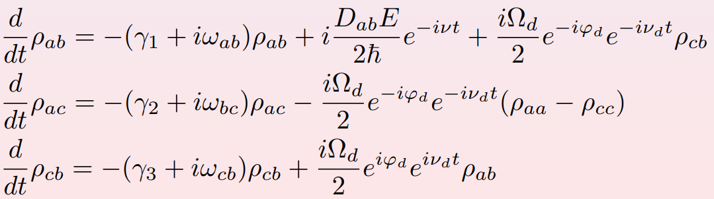
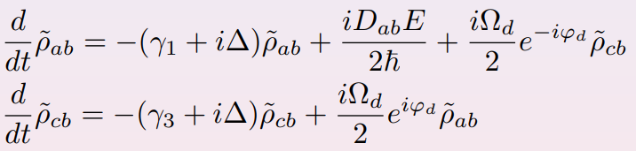
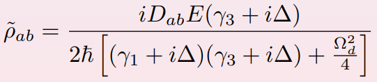
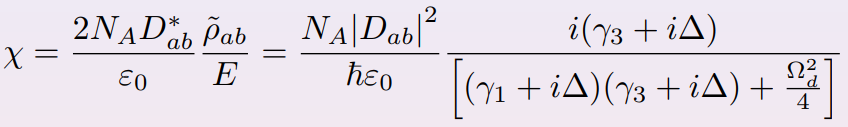
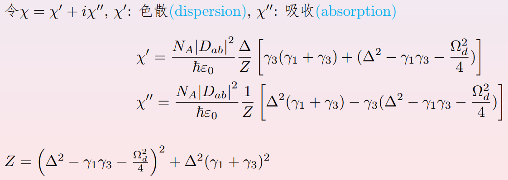
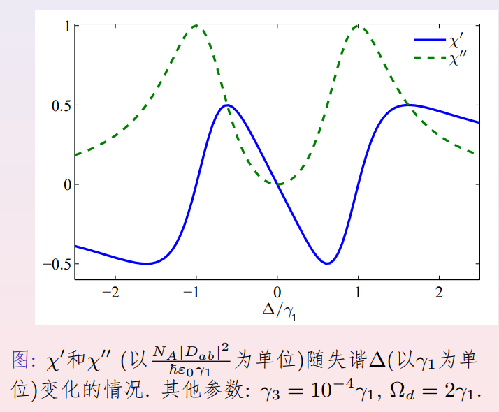
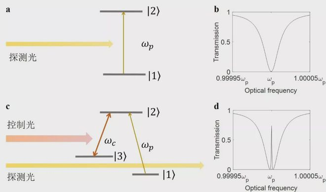

电磁诱导透明(EIT)
立个坑，记录下EIT的完整推导过程
电磁诱导透明（EIT）
EIT简介
电磁诱导透明(EIT)即”electromagnetically induced transparency”，是在三能级原子组成的一个介质中，在强驱动电磁场的作用下对弱探测电磁场呈现透明的现象。
所谓透明的现象就是指的是这个体系对弱探测电磁场是没有作用的，包括：吸收和相互之间的一些作用，因此我们无法观测到他，则他是透明的。
电磁诱导透明是一般是用两束光同时照射到原子介质，使得其中一束光能够在与原子跃迁共振时通过原子介质而不产生吸收和反射的现象。如图1所示
EIT是一种典型的量子相干效应，其本质为强耦合光影响了吸收介质的色散性质，从而使介质对弱探测光的吸收减小甚至完全透明。

EIT推导
系统哈密顿量
在薛定谔绘景下，体系哈密顿量包含两部分：，
其中是自由哈密顿量部分，即
相互作用部分：
其中是a,b两个能级的电偶极矩，为探测场强度，为探测场频率，为耦合场拉比频率，为耦合场初相位，为耦合场频率。
由此，系统的哈密顿量可以写为矩阵形式：
密度矩阵方程与稳态解
由量子刘维尔方程，在其中引入耗散项，则密度矩阵非对角元所满足的方程组为：

考虑初始条件，假设初始时系统处在b态上，此时，同时考虑探测场很弱，即E很小，此时我们可将矩阵元方程当中，所有含E的项中的变为。由此方程组可以简化为：

通过观察，我们可以看出，该简化方程组中方程(1)与方程(3)构成了一个封闭的方程组，我们考虑求解该封闭方程组。
此时，我们做变换：，其中令，也即令耦合场与ac能级共振，探测场与ab能级间存在失谐。
由此我们得到以下形式：

我们令其随时间变化变为0，即令，此时得到其稳态解为：

体系色散吸收性质
设复极化强度为，同时复极化强度与场强的关系为，由此我们得到电极化率满足的方程:

我们可以看出很显然电极化率将会是一个复数，我们分离其实部与虚部，分别对应着介质对于探测光的色散与吸收。

图像
我们用上面的色散和吸收公式作图，首先进行量纲分析，由于与的量纲相同，的量纲是，因此以为单位，作图如下。

在图中的参数中我们可以看出，当失谐时，且，此时介质对于探测光的吸收几乎为0，而其对于探测光的折射率近似为1。
同时，当改变参数后，在失谐时，是绝对成立的，然而的值会与有关，而出现在的矩阵元方程中，是电偶极跃迁禁戒的矩阵元，因此表示电偶极禁戒跃迁的衰减速率，一般很小，从而很小，即吸收很小。
实验图像


/head.jpg)